Vertically average simulation: comparison of h and S-formulation
Here, we study the use of different formulations for the vertical equlibrium approximations to the two-phase flow in reservoirs.
- Using the height 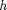 of the CO2 column as primary variable, a mimetic discretization of the pressure equation, and a transport solver based on explicit time stepping. This was the original formulation in the vertical average module.
- Using fractional height (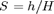) as primary variable, a standard two-point discretization for the pressure equation, and the standard implicit transport solver from mrst core.
The example also sets up a complete input deck (in Eclipse format) which can be used for simulation by traditional solvers
Contents
- Background
- Parameters for the simulation
- Create input deck and convert to SI units
- Instantiate grid and rock structures
- Define boundary conditions, source terms, and fluid properties
- Define wells
- Set up solver based on h-formulation
- Set up solver based on S-formulation
- Initialize solution and variables
- Run the transport simulation.
- Output calculation time
- Compare with analytical pressure
Background
We start with the multiphase version of Darcy's law:
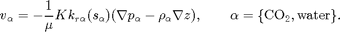
By integrating in the vertical direction and assuming vertical equlibrium with a sharp interface between the two fluids and constant permeability and porosity, we obtain the upscaled version of Darcy's law
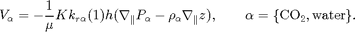
If we now introduce 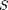 as the fractional height 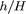 of the CO2 column, Darcy's law can be reformulated using as variable
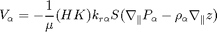
As usual the pressure equation from incompressible flow is obtaind by
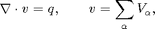
where 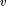 is the Darcy velocity (total velocity) and 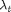 is the total mobility, which depends on the water saturation .
The transport equation (conservation of the CO2 phase) in its simplest form for the S-formulation
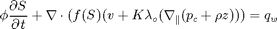
and for the formulation
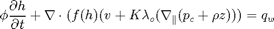
Notice, however, that the fractional flow functions and the capillary pressure function 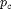 have a different interpretation than in a standard fractional flow model.
try require deckformat gridtools catch %#ok<CTCH> mrstModule add deckformat gridtools end
Parameters for the simulation
gravity on [nx,ny,nz] = deal(50, 1, 1); % Cells in Cartsian grid [Lx,Ly,H] = deal(2000,1000,15); % Physical dimensions of reservoir total_time = 100*year; % Total simulation time nsteps = 40; % Number of time steps in simulation dt = total_time/nsteps; % Time step length inj_time = total_time/10; % Injetection time perm = 100; % Permeability in milli darcies K = perm*milli*darcy(); % Permeability in SI units phi = 0.1; % Porosity depth = 1000; % Initial depth ipress = 200; % Initial pressure
Create input deck and convert to SI units
Create an input deck that can be used together with standard black-oil solvers. To this end, the 2D reservoir is described as a volumeric slice of a 3D reservoir.
deck = sinusDeck([nx ny nz], [Lx Ly H], nsteps, dt, -pi/180, depth, phi, ...
perm, (H*phi*Lx*Ly)*0.2*day/inj_time, ipress);
deck = convertDeckUnits(deck);
Instantiate grid and rock structures
Read the input deck to create a 3D grid, from which we can construct the top-surface grid used for the vertical equilibrium calculations
G = initEclipseGrid(deck); G = computeGeometry(G); Gts = topSurfaceGrid(G); Gts.cells.H = H*ones(Gts.cells.num,1); Gts.columns.dz = ones(numel(Gts.columns.cells),1)*H/nz; Gts.columns.z = cumulativeHeight(Gts); % get permeability rock = initEclipseRock(deck); rock2d = averageRock(rock, Gts); % Note that the top-surface grid is modified with an extra field that % defines a function handle to how to calculate the gravity contribution. % This is the part which is VE spesific. Gts.grav_pressure
ans =
@(g,omega)gravPressureVE_s(g,omega)
Define boundary conditions, source terms, and fluid properties
Boundary conditions are no-flow and there are no source terms. Hence, these need not be specified explicitly, but we include them as a hook if the reader wants to extend the routine to more general cases.
[bc_s, bc_h] = deal([]); [src_s, src_h] = deal([]); for i=1:numel(src_h) src_h.sat = nan; src_h.h = Gts.cells.H(src_s.cell); end % Extract fluid properties from input deck, but use different saturations. mu = [deck.PROPS.PVDO{1}(1,3), deck.PROPS.PVTW(1,4)]; rho = deck.PROPS.DENSITY(1:2); sr = 0.3; sw = 0.3;
Define wells
We extract arbitrarily the first set of wells from the deck constructed for a general black-oil solver. Since the grid specified in the input deck is only one cell thick, the well indices calculated in 3D will also be correct for the VE simulation. However, we need to make to other modifications. First, if the well is specified as 'resv', we change the specification to rate. Likewise, we correct the definition of input value according to solver so that CO2 is injected correctly in each two-phase VE solver.
W_3D = processWells(G, rock, deck.SCHEDULE.control(1)); for i=1:numel(W_3D) if(strcmp(W_3D(i).type,'resv')) W_3D(i).type='rate'; end end W_h = convertwellsVE(W_3D, G, Gts, rock2d,'ip_simple'); W_s = convertwellsVE(W_3D, G, Gts, rock2d,'ip_tpf'); for i=1:numel(W_h) W_s(i).compi=[1 0]; W_h(i).compi=nan; W_h(i).h = Gts.cells.H(W_h(i).cells); end
Set up solver based on h-formulation
Create a cell array to hold helper variables and function handles for each solver.
problem = cell(2,1); tmp.fluid = initVEFluidHForm(Gts, 'mu', mu, 'rho', rho, 'sr', sr,'sw', sw); tmp.sol = initResSol(Gts, 0); % Set up wells, boundary conditions and source terms [tmp.W, tmp.bc, tmp.src] = deal(W_h, bc_h, src_h); % Define pressure and transport solvers with common interfaces. For the % mimetic pressure solver, we need to precompute inner products S = computeMimeticIPVE(Gts,rock2d,'Innerproduct','ip_simple'); tmp.psolver = @(sol, fluid, W, bc, src) ... solveIncompFlowVE(sol, Gts, S, rock2d, fluid, 'wells', W, 'bc', bc, 'src', src); tmp.tsolver = @(sol,fluid, dt, W, bc, src) ... explicitTransportVE(sol, Gts, dt, rock, fluid, 'computeDt', true, ... 'intVert_poro', false,'intVert',false,'wells',W,'bc',bc, 'src', src); % As this solver solves for height of CO2 plume, it is not neccessary to % compute h from saturation values but have to find the saturation tmp.compute_h=false; tmp.compute_sat=true; % Miscellaneous tmp.col ='r-'; tmp.name = 'H formulation using explicit transport and mimetic discretization'; % Insert in cell array problem{1} = tmp; clear tmp
Set up solver based on S-formulation
The S-formulation uses standard solvers, except for the function handle 'twophaseJacobian' in the solution object, which here points to a slightly extended version of the original formulation of the Jacobi system ('twophaseJacobian') normally used in MRST
tmp.fluid = initSimpleVEFluid_s('mu', mu, 'rho', rho, ... 'height', Gts.cells.H, 'sr', [sr, sw]); tmp.sol = initResSolVE_s(Gts, 0, [1 0]); tmp.sol.twophaseJacobian % Set up wells, boundary conditions and source terms [tmp.W, tmp.bc, tmp.src] = deal(W_s, bc_s, src_s); % For the TPFA pressure solver, we need to calculate transmissibilities for % the 2D top-surface grid. Depending on the definition of area and length % in the top-surface grid this may or may not treat length along the % surface. T = computeTrans(Gts,rock2d); T = T.*Gts.cells.H(gridCellNo(Gts)); tmp.psolver = @(sol,fluid, W, bc, src) ... incompTPFA(sol, Gts, T, fluid, 'wells', W, 'bc', bc, 'src', src); tmp.tsolver = @(sol,fluid,dt,W,bc, src) ... implicitTransport(sol, Gts, dt, rock2d, fluid, 'wells', W, 'bc', bc, 'src', src); % One need to calculate h separatly since the solver does not tmp.compute_h = true; tmp.compute_sat = false; % Miscellaneous tmp.col = 'gs'; tmp.name = 'S formulation using implicit transport and two point flux'; % Insert in cell array problem{2} = tmp; clear tmp;
ans =
@twophaseJacobianWithVE_s
Initialize solution and variables
for kk=1:numel(problem) s0 = deck.SOLUTION.SOIL; h0 = deck.SOLUTION.SOIL.*Gts.cells.H; problem{kk}.sol.s = s0; problem{kk}.sol.h = h0; problem{kk}.sol.extSat = [s0, s0]; problem{kk}.sol.h_max = h0; % Timers for pressure and transport solve problem{kk}.p_time=0; problem{kk}.t_time=0; end % Variables used for plotting xc = Gts.cells.centroids(:,1); zt = Gts.cells.z; zb = Gts.cells.H+zt; vol = rock2d.poro.*Gts.cells.volumes.*Gts.cells.H;
Run the transport simulation.
fig1 = figure(1); p=get(fig1,'Position'); set(fig1,'Position', [p(1:2) 1020 420]); fig2 = figure(2); fprintf(1,' Free volumes [1e6 m^3]\n'); fprintf(1,'Time H-form S-form\n'); fprintf(1,'------------------------------\n'); fprintf(1,'%6.2f %f %f\n', 0.0, 0.0, 0.0); t = 0; while t < total_time set(0, 'CurrentFigure', fig1); clf set(0, 'CurrentFigure', fig2); clf for kk=1:numel(problem) tmp = problem{kk}; if(t<inj_time) [W, bc, src] = deal(tmp.W, tmp.bc, tmp.src); else [W, bc, src] = deal([]); end % Solve the pressure timer = tic; tmp.sol = tmp.psolver(tmp.sol, tmp.fluid, W, bc, src); tmp.p_time = tmp.p_time + toc(timer); % Using the computed fluxes, solve the transport timer = tic; if t>inj_time % uncomment to forcing zero total flow tmp.sol.flux(:) = 0; end tmp.sol = tmp.tsolver(tmp.sol,tmp.fluid,dt,W,bc, src); tmp.t_time =tmp.t_time + toc(timer); if tmp.compute_h % Compute h if this problem needs it [h, h_max] = tmp.fluid.sat2height(tmp.sol); tmp.sol.h = h; tmp.sol.h_max = h_max; % set the value s_max for convenience tmp.sol.s_max = tmp.sol.extSat(:,2); end if tmp.compute_sat % if the solver does not compute s and s_max, calculate them h = tmp.sol.h; h_max = tmp.sol.h_max; tmp.sol.s = (h*(1-sw) + (h_max - h)*sr)./Gts.cells.H; tmp.sol.s_max = h_max*(1 - sw)./Gts.cells.H; end % Special type of plot if solving a 2D VE problem if Gts.cartDims(2)>1 subplot(numel(problem),2,(2*(kk-1))+1) pcolor(X,Y,reshape(tmp.sol.h,Gts.cartDims)) if kk==1, cxs=caxis(); else caxis(cxs); end; title(['Height ',num2str(kk)]); colorbar,shading interp subplot(numel(problem),2,(2*(kk-1))+2) pcolor(X,Y,reshape(tmp.sol.max_h,Gts.cartDims)) caxis(cxs) title(['Max Height',num2str(kk)]);colorbar,shading interp problem{kk} = tmp; continue; end % Plot current and observed maximal values for h and S set(0, 'CurrentFigure', fig1); subplot(2,4,1), hold on plot(xc, tmp.sol.h, tmp.col); ylim([0 H]) if kk==1, axh=axis(); else axis(axh); end title('Height'); xlabel('x'); ylabel('h'); subplot(2,4,2), hold on plot(xc, tmp.sol.h_max, tmp.col); ylim([0 H]) if kk==1, axh_max=axis(); else axis(axh_max); end title('Max height'); xlabel('x'); ylabel('h_max') ; subplot(2,4,5), hold on plot(xc, tmp.sol.s(:,1), tmp.col); ylim([0 1]) if kk==1; axs=axis(); else axis(axs); end title('Saturation'); xlabel('x'); ylabel('s') subplot(2,4,6), hold on plot(xc, tmp.sol.s_max(:,1), tmp.col); ylim([0 1]); if kk==1, axs_max=axis(); else axis(axs_max); end title('Max Saturation'); xlabel('x'); ylabel('s_max') set(0, 'CurrentFigure', fig1); subplot(2,4,[3 4 7 8]); set(gca,'YDir','reverse') hold on plot(xc,zt+tmp.sol.h, [tmp.col(1) '-']) plot(xc,zt+tmp.sol.h_max, [tmp.col(1), '--']) if kk==2 patch(xc([1 1:end end]), [min(zt)-1; zt; min(zt)-1], .85*[1 1 1]); patch(xc([1 1:end end]), [max(zb)+1; zb; max(zb)+1], .85*[1 1 1]); legend('Free CO2, h', 'Max CO2, h', 'Free CO2, S', 'Max CO2, S', 4); box on;axis tight; title('Surfaces'); xlabel('x'); ylabel('depth') end % Plot pressures. set(0, 'CurrentFigure', fig2); set(gca, 'YDir', 'reverse') hold on plot(xc, tmp.sol.pressure/barsa, tmp.col) if ~tmp.compute_sat % Also plot CO2 pressure: The default is to use the pressure of % the second phase pressure for the incompressible solvers plot(xc,(tmp.sol.pressure-tmp.fluid.pc(tmp.sol)),['-',tmp.col]) else plot(xc,(tmp.sol.pressure-norm(gravity)*rho(1)*tmp.sol.h),['s',tmp.col]) end xlabel('x'); ylabel('pressure') title('Comparing pressure for the different solvers') % Update solution object problem{kk} = tmp; end set(0, 'CurrentFigure', fig1); drawnow; set(0, 'CurrentFigure', fig2); drawnow; t=t+dt; % Print CO2 inventory fprintf(1,'%6.2f %f %f\n', t/year, ... sum(problem{1}.sol.s.*vol)/1e6, ... sum(problem{2}.sol.s.*vol)/1e6 ); end fprintf(1,'-----------------------------------------\n\n');
Free volumes [1e6 m^3] Time H-form S-form ------------------------------ 0.00 0.000000 0.000000 2.50 0.150000 0.148380 5.00 0.299427 0.288994 7.50 0.431549 0.403057 10.00 0.536992 0.505008 12.50 0.536992 0.505008 15.00 0.536992 0.505008 17.50 0.536992 0.505008 20.00 0.536992 0.505008 22.50 0.536992 0.505008 25.00 0.536992 0.505008 27.50 0.536992 0.505008 30.00 0.536992 0.505008 32.50 0.536992 0.505008 35.00 0.536992 0.505008 37.50 0.536992 0.505008 40.00 0.536992 0.505008 42.50 0.536992 0.505008 45.00 0.536992 0.505008 47.50 0.536992 0.505008 50.00 0.536992 0.505008 52.50 0.536992 0.505008 55.00 0.536992 0.505008 57.50 0.536992 0.505008 60.00 0.536992 0.505008 62.50 0.536992 0.505008 65.00 0.536992 0.505008 67.50 0.536992 0.505008 70.00 0.536992 0.505008 72.50 0.536992 0.505008 75.00 0.536992 0.505008 77.50 0.536992 0.505008 80.00 0.536992 0.505008 82.50 0.536992 0.505008 85.00 0.536992 0.505008 87.50 0.536992 0.505008 90.00 0.536992 0.505008 92.50 0.536992 0.505008 95.00 0.536992 0.505008 97.50 0.536992 0.505008 100.00 0.536992 0.505008 -----------------------------------------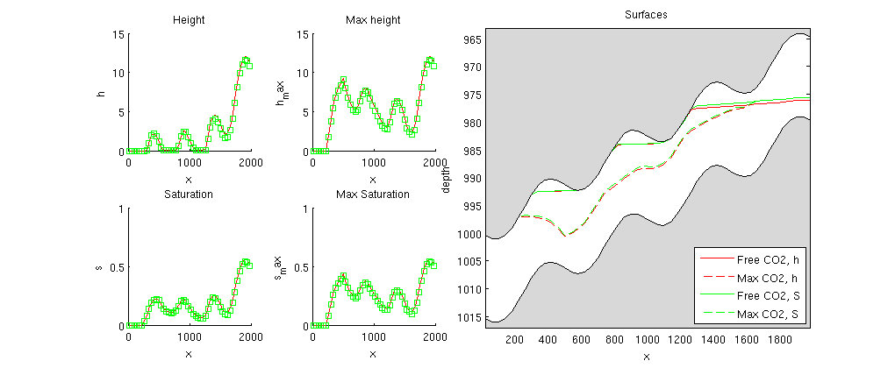 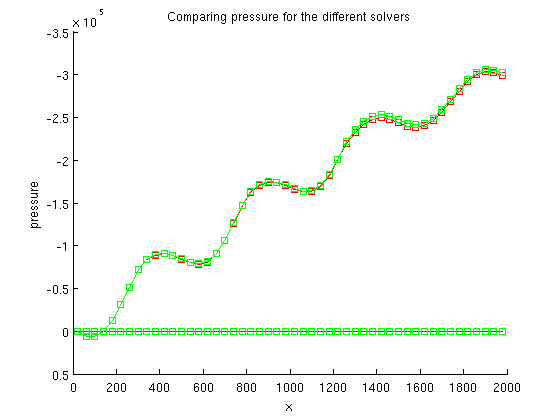
Output calculation time
for kk = 1:numel(problem) fprintf('Time used for solving with:\n\t%s\n',problem{kk}.name); fprintf('\tPressure time : %2.2d sec\n' ,problem{kk}.p_time) fprintf('\tTransport time : %2.2s sec\n',problem{kk}.t_time) end
Time used for solving with: H formulation using explicit transport and mimetic discretization Pressure time : 1.88e-01 sec Transport time : 1.08e+00 sec Time used for solving with: S formulation using implicit transport and two point flux Pressure time : 1.46e-01 sec Transport time : 1.22e+01 sec
Compare with analytical pressure
The state is almost stationary and we therefore add a comparison with pressures computed analytically. In the example, it is always only water at the bottom. For hydrostatic conditions, we can therefore find the pressure at the bottom relative to a given datum (here, we use the pressure at the top of the first column).
set(0, 'CurrentFigure', fig2); clf, hold on set(gca, 'YDir', 'reverse') p = tmp.sol.pressure(1); hh = problem{1}.sol.h; hs = problem{2}.sol.h; rwg = rho(2)*norm(gravity); z = Gts.cells.z; H = Gts.cells.H; % Water pressure at the bottom pwb = p + rwg*(z - z(1) + H(1)); plot(xc, pwb,'dk-') text(xc(6),pwb(5), '\leftarrow Water pressure at bottom', ... 'HorizontalAlignment', 'left') % Water pressure extrapolated hydrostatic to the top of the reservoir pwt = p + rwg*(z - z(1)); plot(xc, pwt, 'dk-') text(xc(end-4), pwt(end-3), 'Water extrapolated to top \rightarrow', ... 'HorizontalAlignment', 'right') % water pressure at interface between CO2 and water pwi = p + rwg*(z - z(1) + hh); plot(xc, pwi,'dk-') text(xc(10),pwi(7),'\uparrow Pressure at interface') % CO2 pressure at the top surface pco2 = p + rwg*(z+-z(1)+H(1)) - norm(gravity)*(rho(2)*(H - hs) + rho(1)*hs); plot(xc, pco2, 'dr-'); text(xc(end-4), pco2(end-3),'Pressure at top \rightarrow', ... 'HorizontalAlignment', 'right', 'Color', 'r') % In this plot of the pressure at the end we see % - The mimetic calculate the pressure at the interface between % co2 and water % - The tpfa with the given fluid calculate the extrapolated % water pressure at the top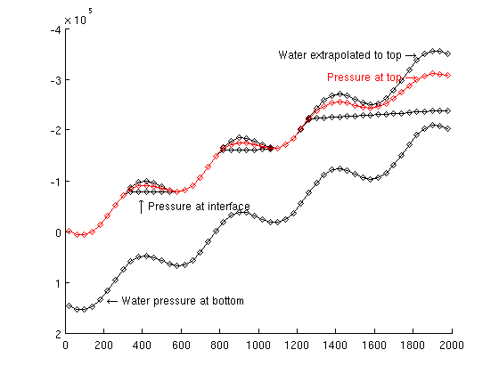